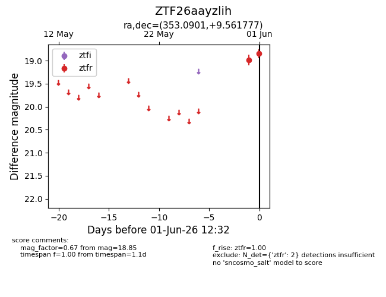
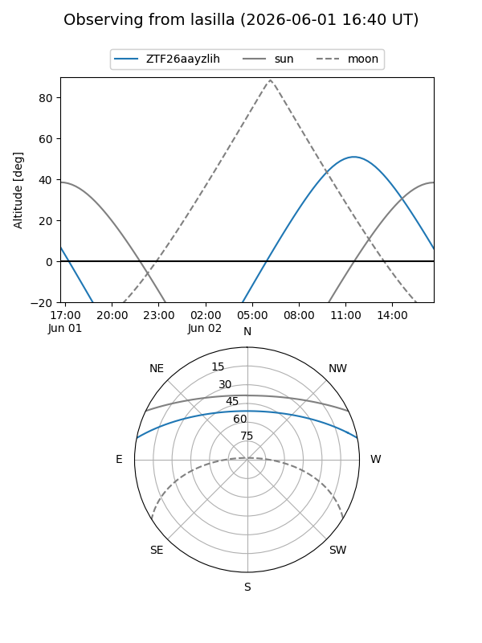
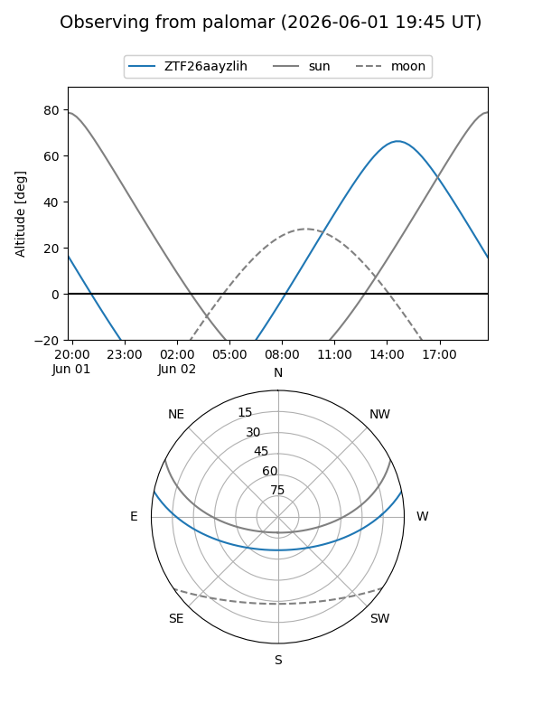

ZTF26aayzlih
Target ZTF26aayzlih at 2026-06-01 12:33
Aliases and brokers:
lsst-FINK: link
lsst-Lasair: link
lsst-ALeRCE: link
ztf-FINK: link
ztf-Lasair: link
ztf-ALeRCE: link
alt names
ZTF26aayzlih (ztf,fink_ztf)
Coordinates:
equatorial (ra, dec) = 353.0901,+9.56178
equatorial (HMS+DMS) = 23:32:21.62,+09:33:42.40
galactic (l, b) = (92.6409,-48.60370)
Flags:
Photometry:
last ztfr=18.85
2 ztfr detections
Lightcurve

Visibility


Additional plots